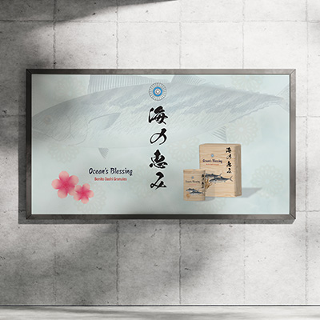
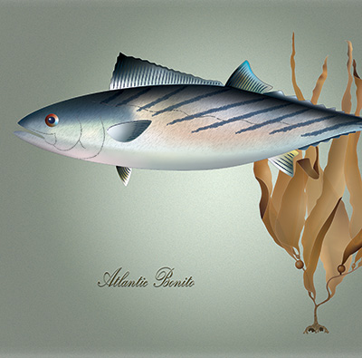

Product Mockup

Dashi Stock Granules Product Packaging Mockup
Inspired by personal connections to Japanese food culture and childhood memories of dashi, the packaging design brings together cultural heritage, nature, and commercial branding. Featuring an original scientific illustration of bonito fish, the design connects the product to its natural ocean source while blending traditional food identity with contemporary visual storytelling.
Target Audience: Food packaging designers and specialty food marketers

Atlantic Bonito & Kelp Scientific Illustration
Growing up in Japan, Atlantic bonito and kelp were familiar staples of my family’s cooking, making this scientific illustration a personal project. I focused on the fish’s subtle sheen and delicate scales while capturing the translucent quality of the kelp. The illustration combines technical practice with childhood culinary memories and was created for use in the dashi product mockup shown above.
Target Audience: Scientific illustrators, natural history publishers, and marine biology educators
← Back to Galary